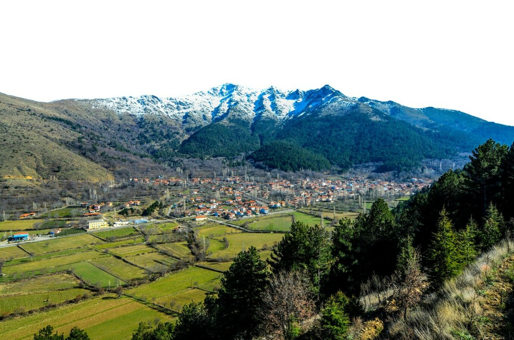
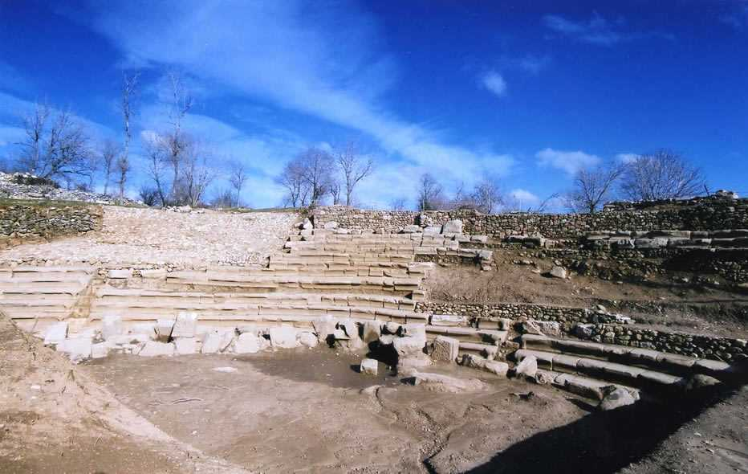
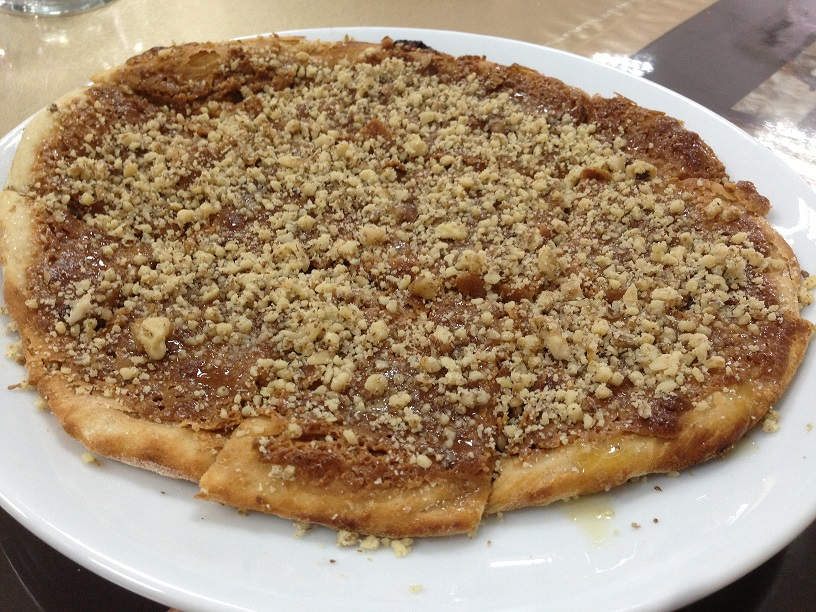
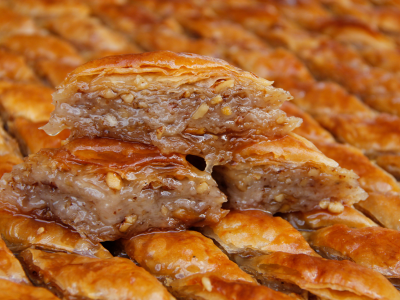

Genel Bakış
Özet: Tavas, kar-kültür-lezzet üçlüsünü tek gün rotasında birleştirebilen güçlü bir ilçe destinasyonudur.
Tavas, Denizli'nin güneybatısında konumlanan; Bozdağ kış turizmi, Herakleia Salbace antik mirası, Kızılcabölük dokuma kültürü ve coğrafi işaretli mutfağı ile çok katmanlı bir destinasyon potansiyeline sahip güçlü bir ilçedir. Bu sayfa, metni etkileşimli modüllerle birleştirir.
Konum ve Tarihçe
Tavas, stratejik yol ağında yer alır; antik Tabae geleneğinden gelen köklü bir yerleşim hafızası taşır.
Demografik Yapı
Kırsal mahalleler üretim gücünü, ilçe merkezi hizmet ve hareketliliği destekler.
Ekonomik Omurga
Tarım, dokumacılık, mermercilik ve turizm bir arada ilerleyen dengeli bir yerel ekonomi sağlar.
Kültürel Ruh
Tavas Zeybeği, ilçenin kimliğini görünür kılan en güçlü sembollerden biridir.
Tavas'ta Bir Gün Rotası
Entegre turizm yaklaşımını gerçek bir günlük deneyime dönüştüren örnek plan:
Nikfer - Bozdağ Başlangıcı
Gün, yüksek rakımda doğa/kış deneyimi ile başlar. Mevsime göre kayak, yürüyüş veya manzara odaklı kısa rota uygulanır.
- Fotoğraf noktaları ve kısa mola alanları planlanır
- Mevsimsel güvenlik ve ekipman kontrolü yapılır
Tavas Merkez - Gastronomi Durağı
Öğle yemeğinde coğrafi işaretli Tavas Pidesi ana deneyim olarak konumlanır; menü hikayesi kısa anlatımla desteklenir.
- Yerel tatlar ve servis kültürü vurgulanır
- Kısa işletme hikayesiyle deneyim güçlendirilir
Kızılcabölük - Dokuma ve Kültür
Atölye ziyareti, dokuma tekniklerinin tanıtımı ve küçük uygulama ile ilçenin üretim kimliği somutlaştırılır.
- Atölye deneyimi: tezgah başında kısa uygulama
- Butik alışveriş: yerel ürünle tematik kapanış
Akşam Programı - Zeybek ve Hikaye
Tavas Zeybeği kültürü eşliğinde gün değerlendirilir; rota, kültür + lezzet + doğa üçlüsü ile tamamlanır.
- Gün sonu içerik paylaşımı için kısa video/fotoğraf seti hazırlanır
- Ertesi ziyaret için alternatif rota önerileri verilir
Özet: "Tavas'ta Bir Gün Rotası, ilçenin dağ turizmi, gastronomi ve el sanatlarını tek bir ekonomik değer zincirinde birleştirir."
Nereye Gidilir?

Bozdağ ve Yaylalar
Kış turizmi yanında yaz döneminde dağ bisikleti, yürüyüş ve yamaç paraşütü ile çeşitlenen doğa alanı.

Herakleia Salbace
Dünyanın en eski eczacılık ve tıp merkezlerinden biri olarak anılan antik odak; Tavas'ın bilimsel miras değeridir.

Kızılcabölük
700 yıllık dokuma geleneğinin yaşadığı atölye bölgesi; deneyimsel turizmin en güçlü noktalarından biri.
İnteraktif SWOT Analizi
Detayları görmek için kartların üzerine gel veya karta tıkla.
Güçlü Yönler
Detay için tıklaStrengths
- Bozdağ ile güçlü kış turizmi altyapısı
- Kızılcabölük dokuma kültürü
- Coğrafi işaretli gastronomi kimliği
- Stratejik yol bağlantıları
Zayıf Yönler
Detay için tıklaWeaknesses
- Nitelikli konaklama kapasitesi sınırlı
- Dijital görünürlükte eksikler
- Kazı ve çevre düzenleme hızının düşük kalması
- Turizmde uzman iş gücü açığı
Fırsatlar
Detay için tıklaOpportunities
- Kış turizmine yükselen talep
- Transit turistin ilçeye çekilmesi
- GEKA/TKDK ve hibe fonları
- Deneyimsel turizm trendinin büyümesi
Tehditler
Detay için tıklaThreats
- İklim krizi ve kar yağışı azalması
- Yakın destinasyonlarla rekabet
- Genç nüfusun göç eğilimi
- Geleneksel üretimde süreklilik riski
Dijital Gastronomi Köşesi
Tavas mutfağı, kısa konaklamayı uzatan ve destinasyona tekrar ziyaret getiren en güçlü motivasyonlardan biridir.

Coğrafi İşaret Vurgusu
Tavas Pidesi
İlçenin en güçlü gastronomi markasıdır; paket turların öğle durağı olarak yüksek çekim üretir.

Coğrafi İşaret Vurgusu
Tavas Baklavası
Özel gün geleneği ve yerel üretim hikayesiyle deneyim odaklı gastronomi anlatısına katkı sunar.
Antik Tıp Vurgusu
Herakleia Salbace, yalnızca bir arkeolojik alan değil; antik dönem tıp birikimini temsil eden güçlü bir hikaye merkezidir. "Dünyanın en eski eczacılık ve tıp merkezlerinden biri" vurgusu, Tavas'ı klasik kültür turizminin ötesine taşıyarak tematik bir marka konumuna yerleştirir.
Neden Stratejik Bir Değer?
Herakleia Salbace, Tavas'ın kültür turizmini sıradan antik kent anlatısından çıkarıp "antik tıp" temalı niş bir marka hikayesine taşıyabilecek ana odak noktadır. Bu sayede ilçe, tarih meraklısı kitlenin yanında akademik gezi gruplarına da hitap edebilir.
- Tematik rota avantajı: "Antik Tıp Rotası" ile farklılaşan gezi deneyimi
- Yüksek anlatı gücü: Bilim tarihi ile kültür turizmini birleştiren güçlü hikaye
- Çarpan etkisi: Rehberlik, yeme-içme ve hediyelik ürün satışında gelir artışı
Alan girişinde kısa bilgilendirme ve antik tıp temasıyla ziyaretçiyi karşılama.
Rehberli anlatı ile sağlık, bitkisel bilgi ve antik dönem yaşam pratiklerini aktarma.
Ziyaret sonrasında Tavas merkezde gastronomi ve el sanatlarıyla günü tamamlama.
Özet: "Herakleia Salbace, Tavas'ın turizmde bilim tarihi üzerinden farklılaşan en güçlü markalaşma kozudur."
Yerel Sembol: Tavas Zeybeği
Tavas Zeybeği, ilçenin kültürel ruhunu temsil eden en etkili simgelerden biridir. Tanıtım videolarında, festival duyurularında ve sosyal medya içeriklerinde bu sembolün düzenli kullanımı marka hafızasını güçlendirir.
Stratejik Vizyon 2030
Tavas'ın 2030 vizyonu; doğal-kültürel mirası koruyan, yerel ekonomiye doğrudan katkı üreten, dört mevsim çalışan ve dijital görünürlüğü güçlü bir turizm ekosistemi kurmaktır. Bu çerçeve, yalnızca ziyaretçi sayısını değil, ziyaret kalitesini ve ilçe içi harcama değerini de artırmayı hedefler.
Cittaslow Adaylığı
Tavas'ın doğal ritmi, yerel üretim gücü ve bozulmamış dokusu; Sakin Şehir yaklaşımı için güçlü adaylık zemini oluşturur.
Z Kuşağı ve Dijital Göçebeler
Yaylalarda internet altyapısı güçlendirilerek uzaktan çalışanlar için sessiz, güvenli ve üretken mikro yaşam alanları tasarlanabilir.
İklim Krizi ve Dönüşüm
Kar yağışı riskine karşı yapay karlama, yaz sezonunda dağ bisikleti-yamaç paraşütü ve dört mevsim aktivite dönüşümü birlikte planlanmalıdır.
Doğa ve Mevsimsel Çeşitlilik
Bozdağ ekseninde kış turizmi korunurken, yaz aylarında bisiklet, yürüyüş ve paraşüt odaklı ürünlerle yıl boyu hareketlilik hedeflenir.
Kültürel Derinlik ve Hikaye
Herakleia Salbace'nin antik tıp anlatısı, ilçeyi klasik gezi noktası olmaktan çıkarıp tematik destinasyon kimliğine taşır.
Yerel Üretim ve Deneyim Ekonomisi
Dokuma atölyeleri ve gastronomi durakları, ziyaretçiyi üretimle buluşturarak ilçede kalış süresini ve kişi başı harcamayı yükseltir.
Hedef göstergeler; belediye, sektör temsilcileri ve paydaş kurulunun yıllık izleme raporlarına göre güncellenebilir performans metrikleridir.
Destinasyon Karnesi
Doğa
5/5
Gastronomi
5/5
Kültür
4/5
Konaklama
2/5
Konaklama başlığında mevcut puan 2/5 seviyesindedir. 2030 planında butik pansiyonlar, dağ evi yatırımları ve kalite standartlarıyla bu puanın 5/5 seviyesine yükseltilmesi hedeflenmektedir.
| Dönem | Öncelikli Eylem | Sorumlu Yapı | Beklenen Etki |
|---|---|---|---|
| 1-2 Yıl | Tabelalandırma, danışma ofisi, dijital tanıtım ve hizmet eğitimi | Belediye, Kaymakamlık, İl Kültür ve Turizm | Algı ve yönlendirme kalitesinde hızlı iyileşme |
| 3-5 Yıl | Butik konaklama, festival takvimi, dokuma-gastronomi deneyim paketleri | Belediye, Ticaret Odası, özel sektör | Geceleme ve ilçe içi harcama artışı |
| 5-10 Yıl | Uluslararası tanıtım, akıllı destinasyon, sürdürülebilir denetim modeli | Kamu-özel ortaklığı, kalkınma ajansları | Kalıcı marka değeri ve rekabet avantajı |